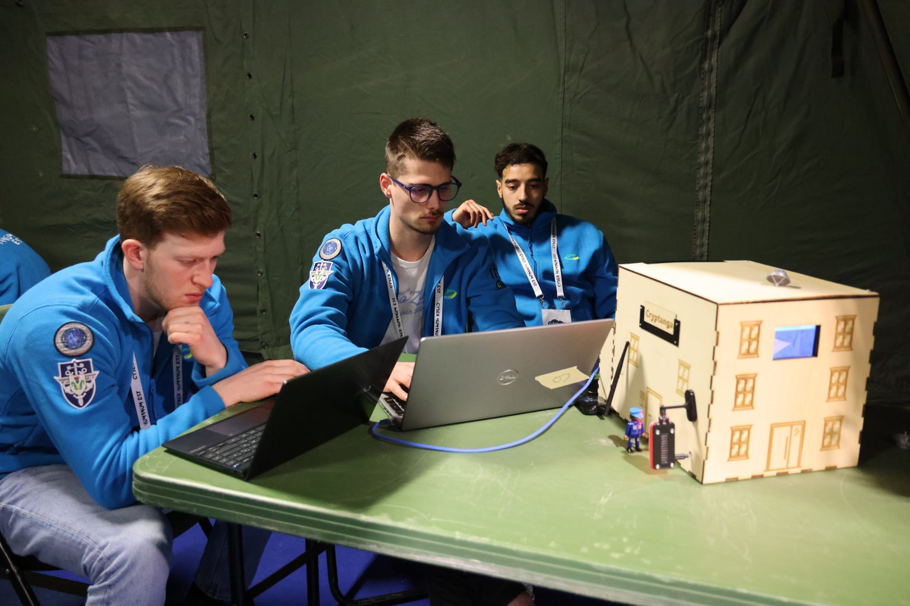

Cette aventure a été bien plus qu'un simple exercice. Elle nous a permis d'acquérir des compétences précieuses, de nous confronter à des conditions réelles et de vivre une expérience humaine et professionnelle unique.
Cyber Humanum Est nous a offert une immersion dans un environnement cyber complexe. Nous avons appris à analyser des cyberattaques, à mettre en place des défenses adaptées et à gérer des incidents en temps réel.
Le CHE ne se limitait pas à un exercice théorique. Nous avons dû travailler sous pression dans des conditions extrêmes :
Au-delà des compétences techniques, cet événement nous a appris à travailler en équipe, à nous adapter aux imprévus et à prendre des décisions sous pression. Il a aussi été l'occasion de rencontrer des experts et des passionnés du domaine.
Le CHE nous a permis d’en apprendre davantage sur les enjeux de la cybersécurité et les nombreuses opportunités du secteur. Les échanges avec les partenaires et les professionnels présents ouvrent de nouvelles perspectives pour notre avenir.